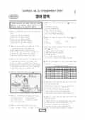

문제지

전국연합학력평가 · 시·도교육청 주관
2026년 3월 고3 학력평가 영어 1등급 기준은 원점수 90점 이상(절대평가)이고, 1등급 비율은 4.08%입니다.
1등급 비율은 평가원·시도교육청 발표값입니다. 등급별 값은 등급컷 표, 출처 구분은 데이터 원칙에 있습니다.

시험지를 먼저 풀어 보세요. 등급컷·표준점수·난이도는 흐리게 가려 뒀어요.
| 등급 | 원점수 | 비율 |
|---|---|---|
| 1 | 90 | 4.08% |
| 2 | 80 | 9.46% |
| 3 | 70 | 17.77% |
| 4 | 60 | 20.54% |
| 5 | 50 | 15.55% |
| 6 | 40 | 11.68% |
| 7 | 30 | 9.0% |
| 8 | 20 | 8.84% |
| 9 | — | 3.09% |
등급별 컷 · 절대평가 · 만점 100점
| 등급 | 원점수 이상 | 인원(명) | 비율 |
|---|---|---|---|
| 1 | 90 | 13,637 | 4.08% |
| 2 | 80 | 31,634 | 9.46% |
| 3 | 70 | 59,403 | 17.77% |
| 4 | 60 | 68,668 | 20.54% |
| 5 | 50 | 51,981 | 15.55% |
| 6 | 40 | 39,035 | 11.68% |
| 7 | 30 | 30,084 | 9% |
| 8 | 20 | 29,559 | 8.84% |
| 9 | 0 | 10,322 | 3.09% |
시·도교육청 공개 자료
출처: 시·도교육청이 공개한 전국연합학력평가 성적 분석·통계자료(공개 자료 보기).
EBSi 응답자 기준으로 가장 많이 틀린 문항은 30번(2점)이고, 오답률은 80.9%입니다. 상위 15문항 중 2문항은 정답보다 한 오답을 고른 사람이 더 많았습니다(30번: 정답 ② 19.1%, ④ 38%). 오답률 50%를 넘은 문항은 14개입니다.
| 순위 | 문항 | 배점 | 오답률 | 정답 | 많이 고른 오답 |
|---|---|---|---|---|---|
| 1 | 30번 | 2점 | 80.9% | ② | ④ 38% |
| 2 | 39번 | 3점 | 71.7% | ⑤ | ④ 37.9% |
| 3 | 24번 | 3점 | 65.7% | ① | ④ 25.5% |
| 4 | 36번 | 3점 | 64.9% | ④ | ③ 25.7% |
| 5 | 33번 | 3점 | 63.5% | ③ | ④ 22.1% |
| 6 | 38번 | 2점 | 62.3% | ③ | ④ 34.1% |
| 7 | 41번 | 2점 | 60.8% | ① | ④ 24% |
| 8 | 31번 | 2점 | 59.8% | ⑤ | ② 19.1% |
| 9 | 21번 | 3점 | 58.6% | ③ | ④ 16.4% |
| 10 | 42번 | 3점 | 57.7% | ④ | ③ 24.8% |
| 11 | 40번 | 2점 | 57.6% | ② | ① 28.6% |
| 12 | 32번 | 2점 | 55.5% | ② | ③ 22.9% |
| 13 | 34번 | 2점 | 54% | ③ | ① 15.9% |
| 14 | 37번 | 2점 | 52.6% | ② | ③ 20.6% |
| 15 | 35번 | 2점 | 45.9% | ③ | ④ 22% |
EBSi 가채점 응답자 기준 · 전 문항 중 오답률 상위 15문항
출처: EBSi 역대 등급컷·오답률 공개 화면. 가채점에 참여한 EBSi 이용자 응답이라 전체 응시자 정답률과는 다를 수 있습니다.
발행 기관: 시·도교육청(전국연합학력평가). 파일 위치: 이 사이트가 보관한 사본. 저작권은 발행 기관에 있습니다. 원본과 다르거나 게시 중단이 필요하면 연락처로 알려 주세요. 등급컷 출처 구분은 데이터 원칙에서 설명합니다.
막대 색은 역대 대비 난이도 · 진한 막대가 이 시험 · 막대를 누르면 그 회차로 이동
| 회차 | 1등급 비율 | 난이도 |
|---|---|---|
| 3월 학평2026년 고3이 시험 | 4.08% | 매우 어려움 |
| 10월 학평2025년 고3 | 10.91% | 매우 쉬움 |
| 7월 학평2025년 고3 | 6.65% | 보통 |
| 3월 학평2025년 고3 | 4.65% | 어려움 |
| 10월 학평2024년 고3 | 10.42% | 매우 쉬움 |
| 7월 학평2024년 고3 | 5.8% | 보통 |
| 3월 학평2024년 고3 | 7.99% | 쉬움 |
| 10월 학평2023년 고3 | 15.31% | 매우 쉬움 |
| 7월 학평2023년 고3 | 9.74% | 쉬움 |
| 4월 학평2023년 고3 | 4.97% | 어려움 |
영어는 1등급 비율이 4.08%로 지난해 3월(4.65%)보다 낮았습니다. EBSi 가채점 응답자 기준으로 오답률 50%를 넘은 문항이 14개에 달했습니다.
가장 많이 틀린 30번(2점, 80.9%)은 개념화와 범주화가 대상의 고유한 특성을 지운다는 글의 어휘 문항으로, 응답의 38.0%가 한 오답을 골랐습니다. 39번(3점, 71.7%)은 전문 지식은 관행이 투명하게 공개되어도 훈련 없이는 외부인이 알기 어렵다는 문장을 넣는 문항이었습니다.
24번(3점, 65.7%)은 너무 익숙해진 것은 예술이 다시 드러낼 때까지 보이지 않는다는 글의 제목 문항, 36번(64.9%)은 대니얼 데닛이 말한 '대화 종결자'로서의 도덕적 고려를 다룬 순서 배열 문항이었습니다.
어휘 문항에서 오답률이 가장 높았던 만큼, 밑줄 친 낱말을 반의어로 바꿨을 때 글의 논리가 살아나는지 확인하는 방식으로 연습하면 좋습니다. 시험 전체 흐름은 이 회차의 회차 해설에 정리했습니다.